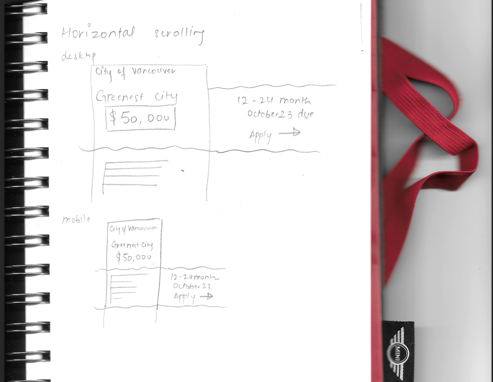
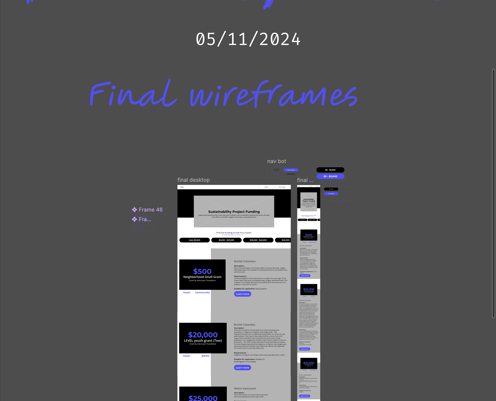
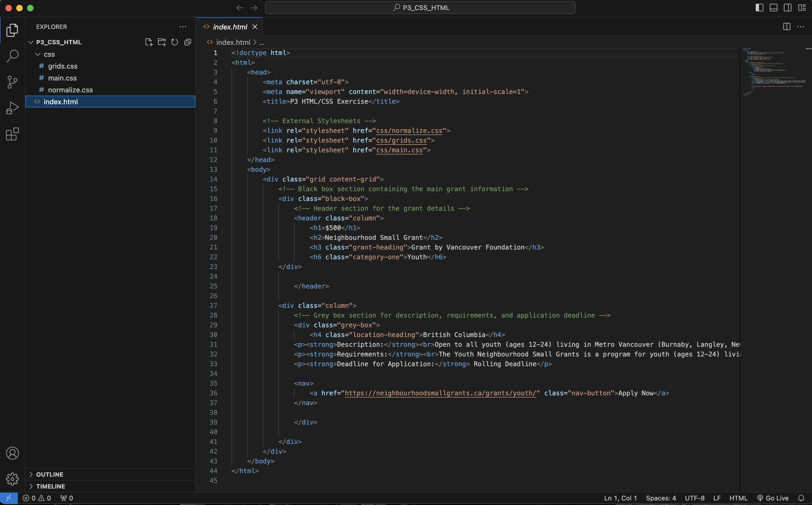
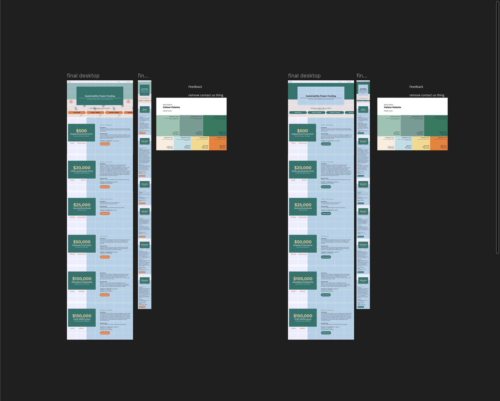
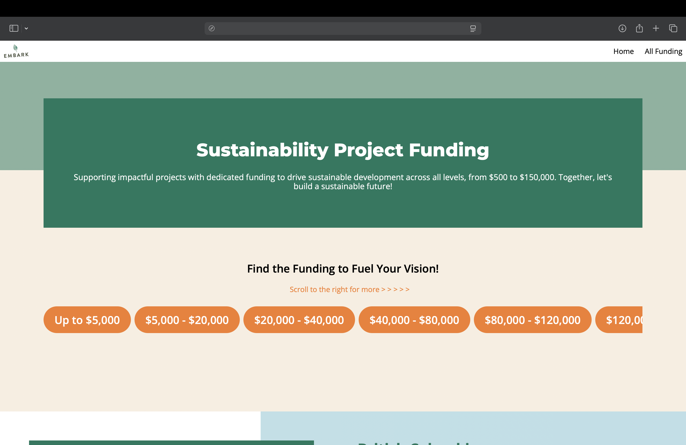

IAT 235 · Information Design
Embark Website
Redesign
3
Team Members
Responsive
Layout
Client
Project
4 wks
Timeline
November – December 2024
Team: Manmeet Sagri, Hind Hammad, Yilin Gao
Role: UX/UI Designer & Front-End Developer
Tools: HTML, CSS, Figma
What is it?
A responsive website redesign created for Embark Sustainability Society as part of IAT 235.
The project focused on transforming Embark’s Sustainable Project Funding Opportunities spreadsheet
into a cleaner and more usable web experience.
Since this was one of my earlier design projects, the final solution stayed intentionally simple.
My focus was on learning how to think more like a designer by understanding users, organizing content,
working within an existing brand identity, and turning wireframes into a working website.
The Process
Phase 1
Understanding the Content & Planning the Direction


I began by looking closely at Embark’s original spreadsheet and identifying what made it harder to use.
Although it contained valuable information, it felt dense, visually overwhelming, and difficult to scan
quickly.
This helped me understand an important early design lesson: good design is not just about making something
look better, but about making information easier for people to understand and navigate. From the start,
I knew the redesign needed stronger hierarchy, simpler grouping, and clearer structure.
Phase 2
Wireframing & Prototyping
One of the biggest takeaways from this project was learning how to move from ideas into structure.
I explored layouts through sketches first, then used Figma to help turn those ideas into clearer digital
wireframes.
This stage taught me how wireframing helps simplify decision-making before development begins.
It also introduced me to the design workflow more seriously: thinking about user needs, organizing content,
testing structure, and building toward a prototype rather than jumping straight into code.
Phase 3
Visual Design & Front-End Development


My main contribution was in the visual design direction and front-end styling. I focused on refining layouts,
spacing, and hierarchy so the interface felt cleaner while still staying aligned with Embark’s brand identity.
Since this was an earlier design project, I intentionally kept the visual approach simple rather than
overdesigning it.
Key contributions:
- Refined the visual hierarchy and layout using CSS
- Worked with Embark’s color palette, branding, and existing visual identity
- Helped shape the final prototype direction in Figma
- Contributed to turning the prototype into a functional responsive website
Phase 4
Refinement, Responsiveness & Team Collaboration


As the website came together, I refined the interface by paying closer attention to spacing, readability,
and overall clarity. I wanted the final design to feel approachable and easy to navigate, especially compared
to the original spreadsheet format.
This project also taught me a lot about working in a team. It was one of my first experiences moving through
a fuller design process with others, from early discussion and wireframing to prototyping and final
development. It gave me a much better understanding of how collaboration shapes stronger design outcomes.
Problems & Reflection
Problem
The original spreadsheet was informative, but hard to scan and visually overwhelming.
One of the first challenges was understanding how to translate dense spreadsheet content into a more usable
website without losing important details. This pushed me to think more carefully about hierarchy, layout,
and how users move through information.
Problem
Keeping the design simple while still matching the brand required restraint.
Since this was an earlier design project, I was still learning how to balance creativity with clarity.
Instead of trying to make the site overly complex, I focused on matching Embark’s identity, using their
colors thoughtfully, and building something clean, readable, and functional.
Feedback
This project helped me build my foundation as a designer.
More than anything, this project introduced me to the basic mindset behind design work. It helped me
understand how designers think about users, wireframes, prototypes, branding, and actual development,
instead of seeing design as just the final visual layer.
What I Learned
Simple work can still be strong when it is thoughtful, clear, and user-focused.
This project gave me foundational experience in user-centered thinking, collaborative design, and front-end
implementation. It taught me how to work within an existing visual identity, how to translate ideas from
wireframes into code, and how much I enjoy the full process of designing and building digital experiences.